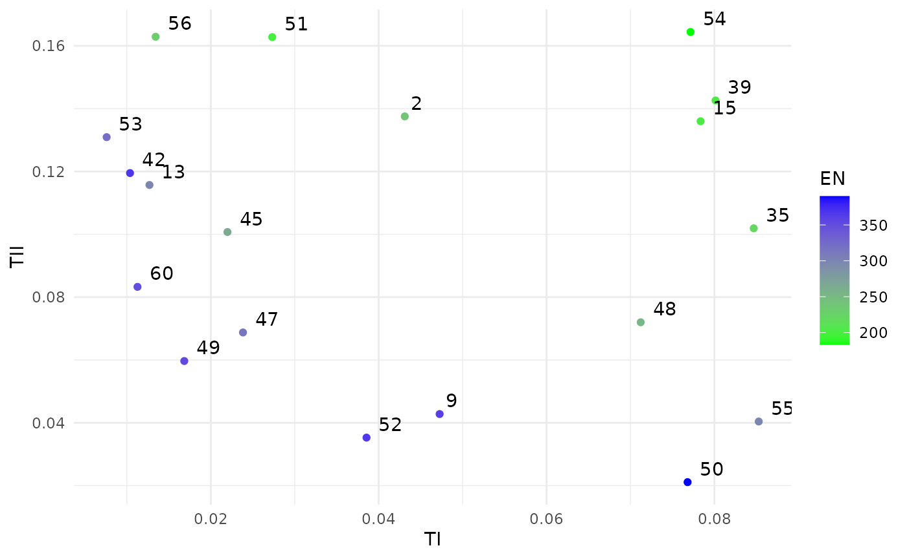
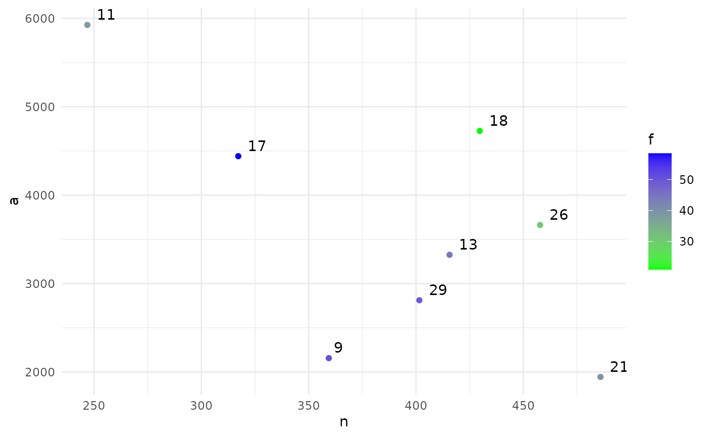

Examples
Examples.RmdIn this vignette we provide a few example applications of BOSSS.
NIFTy
The NIFTy trial was open to people having total thyroid surgery and aimed to find out whether using near-infrared fluorescence imaging could reduce the number of people whose parathyroid glands become damaged during thyroid surgery. It was an adaptive design with an interim analysis based on a (binary) short-term outcome, and a final analysis based on a (again, binary) long-term outcome.
The design problem here is to choose the sample size and the decision rule for both the inerim and final analysis. Both analyses used a test, so the decision rule could be expressed as the nominal used at each stage.
This is the simulation function, exactly as provided by the trial statistician except for small adjustments to the arguments and return values to conform to the BOSSS standards.
#n is the total sample size
#ninterim is the number of patients at the interim analysis (proportion)
#ainterim is alpha at interim analysis (threshold p-value at interim analysis)
#afinal is alpha at final analaysis (threshold p-value for 2nd and final analysis)
#this means overall alpha for the trial is ainterim*afinal
#
#pcontshort is the probability of 1 day PoSH in the control arm
#pexpshort is the probability of 1 day PoSH in the experimental arm
#pcontlong is the probability of 6 month PoSH in the control arm
#pexplong is the probability of 6 month PoSH in the experimental arm
#p01_relative is s.t. p01_relative*pexplong = probability of having
# a long term outcome after no short term outcome
sim_trial <- function(n = 300, ninterim = 0.5, ainterim = 0.4, afinal = 0.1,
pcontshort = 0.25, pexpshort = 0.125,
pcontlong = 0.1, pexplong = 0.03, p01_relative = 0)
{
ninterim <- floor(ninterim*n)
patients<-c(1:n) #create patients
treat<- rep(c(1,2), ceiling(n/2))[1:n]
n_cont <- sum(treat == 1)
short<-rep(0,n) #short term outcome
long<-rep(0,n) #long term outcome
data<-data.frame(patients,treat,short,long) #combine into dataset
#generate result 1/0 for short term outcome. If short term outcome=0 then long term outcome=0
#If short term outcome=1 then long term outcome has probability pcontlong/pcontshort
#repeat for treatment=2
# for(i in 1:n){
# if(treat[i]==1){
# data$short[i]<-rbinom(1,1,pcontshort)
# if(data$short[i]==0){
# data$long[i]<-0
# }
# if(data$short[i]==1){
# data$long[i]<-rbinom(1,1,pcontlong/pcontshort)
# }
# }
# else{
# data$short[i]<-rbinom(1,1,pexpshort)
# if(data$short[i]==0){
# data$long[i]<-0
# }
# if(data$short[i]==1){
# data$long[i]<-rbinom(1,1,pexplong/pexpshort)
# }
# }
# }
# An alternative and more general parametersation of the above model
# to allow different values of probability of a long outcome after
# no short outcome (previously hard coded as 0)
# probability vector p00, p01, p10, p11 in (short, long) form
# Control arm:
p01 <- p01_relative*pcontlong
p11 <- pcontlong - p01
p10 <- pcontshort - p11
# Simulate outcomes in multinomial format
cont_count <- rmultinom(1, n_cont, c((1 - p01 - p10 - p11), p01, p10, p11))
# Translate these to short and long outcomes
cont_out <- matrix(c(rep(c(0,0), cont_count[1]),
rep(c(0,1), cont_count[2]),
rep(c(1,0), cont_count[3]),
rep(c(1,1), cont_count[4])), ncol = 2, byrow = TRUE)
# shuffle the list randomly
cont_out <- cont_out[sample(1:nrow(cont_out)),]
# Experimental arm:
# Control arm:
p01 <- p01_relative*pexplong
p11 <- pexplong - p01
p10 <- pexpshort - p11
exp_count <- rmultinom(1, n - n_cont, c((1 - p01 - p10 - p11), p01, p10, p11))
exp_out <- matrix(c(rep(c(0,0), exp_count[1]),
rep(c(0,1), exp_count[2]),
rep(c(1,0), exp_count[3]),
rep(c(1,1), exp_count[4])), ncol = 2, byrow = TRUE)
exp_out <- exp_out[sample(1:nrow(exp_out)),]
data[data$treat == 1, c("short", "long")] <- cont_out
data[data$treat == 2, c("short", "long")] <- exp_out
#perform chi squared test on short term outcome for 1st ninterim patients
data2<-data[1:ninterim,]
tbl<-table(data2$short,data2$treat)
test<- suppressWarnings(chisq.test(tbl)$p.value) #get p-value
#if p<ainterim, perform chi squared test on long term outcome for all patients
if(test<ainterim){
tbl2<-table(data$long,data$treat)
test2<- suppressWarnings(chisq.test(tbl2)$p.value)
}
#if p>ainterim, trial unsuccessful at interim and final analysis
#if p<ainterim, trial successful at interim:
#if p2>afinal, trial unsuccessful at final analysis
#if p2<afinal, trial successful at final analysis
if(test>=ainterim){
return(c(g = FALSE, s = TRUE, n = ninterim))
}
if(test<ainterim){
if(mean(data2[data2$treat == 1,"short"]) < mean(data2[data2$treat == 2,"short"])){
return(c(g = FALSE, s = TRUE, n = ninterim))
} else {
if(test2>afinal){
return(c(g = FALSE, s = TRUE, n = n))
}
if(test2<afinal){
return(c(g = TRUE, s = FALSE, n = n))
}
}
}
}
# For example,
sim_trial()We can construct the BOSSS problem object as follows:
# Problem specification
design_space <- design_space(lower = c(300,0.05,0,0),
upper = c(700,0.5,1,1),
sim = sim_trial)
hypotheses <- hypotheses(values = matrix(c(0.25, 0.25, 0.1, 0.1, 0,
0.25, 0.125, 0.1, 0.03, 0), ncol = 2),
hyp_names = c("null", "alt"),
sim = sim_trial)
constraints <- constraints(name = c("TI_con", "TII_con"),
out = c("g", "s"),
hyp = c("null", "alt"),
nom = c(0.1, 0.2),
delta =c(0.95, 0.95),
binary = c(TRUE, TRUE))
objectives <- objectives(name = c("TI", "TII", "EN"),
out = c("g", "s", "n"),
hyp = c("null", "alt", "null"),
weight = c(100, 100, 1),
binary = c(TRUE, TRUE, FALSE))
prob <- BOSSS_problem(sim_trial, design_space, hypotheses, objectives, constraints)This implies we are going to search over a space of sample sizes and
decision criteria, looking for trial designs which simultaneously
minimise the type I error rate ("TI"), type II error rate
("TII") and expected sample size ("EN"),
subject to the type I error rate being (probably) less than 0.1
("TI_con") and the type II error rate being (probably) less
than 0.2 ("TIIcon").
Now we initialise to get an initial estimate of the Pareto front:
# Initialisation
size <- 40
N <- 500
sol <- BOSSS_solution(size, N, prob)
print(sol)
#> Design variables for the Pareto set:
#>
#> n ninterim ainterim afinal
#> 2 600.00 0.1625000 0.750000 0.250000
#> 9 575.00 0.4156250 0.812500 0.187500
#> 13 625.00 0.3593750 0.437500 0.062500
#> 15 325.00 0.4718750 0.687500 0.312500
#> 22 587.50 0.2046875 0.718750 0.031250
#> 27 462.50 0.4578125 0.781250 0.093750
#> 35 418.75 0.2820313 0.859375 0.328125
#> 37 668.75 0.3382812 0.734375 0.203125
#> 39 368.75 0.4507813 0.484375 0.453125
#>
#> Corresponding objective function values...
#>
#> g, null (mean) g, null (var) s, alt (mean) s, alt (var) n, null (mean)
#> 2 -3.023783 0.04519900 -1.764057 0.01600202 227.7800
#> 9 -3.221373 0.05416146 -3.335521 0.06020906 356.6240
#> 13 -4.378391 0.16331377 -2.359280 0.02533537 304.2000
#> 15 -2.384886 0.02587913 -1.846444 0.01697650 203.9120
#> 22 -4.226834 0.14091644 -1.474557 0.01318541 280.8200
#> 27 -3.689289 0.08401554 -2.047467 0.01973883 295.0010
#> 35 -2.285558 0.02384669 -2.359280 0.02533537 232.2850
#> 37 -3.118117 0.04925661 -2.856301 0.03887797 366.7945
#> 39 -2.493162 0.02834157 -1.812902 0.01656951 201.6840
#> n, null (var)
#> 2 97.55297
#> 9 51.91310
#> 13 51.55944
#> 15 12.35437
#> 22 98.83823
#> 27 28.19656
#> 35 42.70572
#> 37 85.19774
#> 39 11.94706
#>
#> ...and constraint function values:
#>
#> g, null (mean) g, null (var) s, alt (mean) s, alt (var)
#> 2 -3.023783 0.04519900 -1.764057 0.01600202
#> 9 -3.221373 0.05416146 -3.335521 0.06020906
#> 13 -4.378391 0.16331377 -2.359280 0.02533537
#> 15 -2.384886 0.02587913 -1.846444 0.01697650
#> 22 -4.226834 0.14091644 -1.474557 0.01318541
#> 27 -3.689289 0.08401554 -2.047467 0.01973883
#> 35 -2.285558 0.02384669 -2.359280 0.02533537
#> 37 -3.118117 0.04925661 -2.856301 0.03887797
#> 39 -2.493162 0.02834157 -1.812902 0.01656951
plot(sol)
Finally, we iterate a few times to improve that initial approximation:
# Iterations
N <- 500
for(i in 1:20) {
sol <- iterate(sol, prob, N)
}
print(sol)
#> Design variables for the Pareto set:
#>
#> n ninterim ainterim afinal
#> 2 600.0000 0.1625000 0.7500000 0.25000000
#> 9 575.0000 0.4156250 0.8125000 0.18750000
#> 13 625.0000 0.3593750 0.4375000 0.06250000
#> 15 325.0000 0.4718750 0.6875000 0.31250000
#> 35 418.7500 0.2820313 0.8593750 0.32812500
#> 39 368.7500 0.4507813 0.4843750 0.45312500
#> 42 696.7668 0.4555916 0.3326731 0.01782676
#> 45 516.4745 0.4302293 0.3941854 0.16301852
#> 47 625.2480 0.4039887 0.4004877 0.18772294
#> 48 439.6051 0.3664093 0.8074256 0.28307692
#> 49 621.8103 0.4986784 0.3374450 0.11741606
#> 50 632.9055 0.4936170 0.5787490 0.35234491
#> 51 447.1385 0.2720656 0.6455986 0.16845326
#> 52 611.8022 0.4952288 0.4885986 0.22588945
#> 53 620.8031 0.4818502 0.1746389 0.04170175
#> 54 340.3914 0.3331821 0.7793364 0.31243737
#> 55 490.6632 0.4617599 0.6692496 0.36081964
#> 56 526.4137 0.3409052 0.4083777 0.08441566
#> 60 636.9130 0.4997090 0.2507842 0.07803600
#>
#> Corresponding objective function values...
#>
#> g, null (mean) g, null (var) s, alt (mean) s, alt (var) n, null (mean)
#> 2 -3.023783 0.04519900 -1.764057 0.01600202 227.7800
#> 9 -3.221373 0.05416146 -3.335521 0.06020906 356.6240
#> 13 -4.378391 0.16331377 -2.359280 0.02533537 304.2000
#> 15 -2.384886 0.02587913 -1.846444 0.01697650 203.9120
#> 35 -2.285558 0.02384669 -2.359280 0.02533537 232.2850
#> 39 -2.493162 0.02834157 -1.812902 0.01656951 201.6840
#> 42 -6.030685 0.83533640 -2.047467 0.01973883 364.0911
#> 45 -4.094751 0.12398289 -2.150157 0.02138823 265.5822
#> 47 -3.533378 0.07247929 -2.493162 0.02834157 318.4381
#> 48 -2.551256 0.02977855 -2.411048 0.02644954 252.9397
#> 49 -4.556303 0.19432705 -2.895870 0.04027675 344.2991
#> 50 -2.856301 0.03887797 -3.872426 0.10007918 374.8975
#> 51 -3.397487 0.06379365 -1.671131 0.01500043 211.0142
#> 52 -3.118117 0.04925661 -3.335521 0.06020906 366.4389
#> 53 -5.422544 0.45655261 -1.952320 0.01835923 320.8826
#> 54 -2.551256 0.02977855 -1.597971 0.01427917 181.6722
#> 55 -2.437794 0.02704859 -3.118117 0.04925661 299.5764
#> 56 -5.045842 0.31451121 -1.612318 0.01441616 227.6379
#> 60 -3.872426 0.10007918 -2.285558 0.02384669 362.0100
#> n, null (var)
#> 2 97.55297
#> 9 51.91310
#> 13 51.55944
#> 15 12.35437
#> 35 42.70572
#> 39 11.94706
#> 42 31.39490
#> 45 21.91272
#> 47 40.84945
#> 48 34.39271
#> 49 19.07493
#> 50 32.52114
#> 51 42.59428
#> 52 31.68524
#> 53 13.15239
#> 54 21.84288
#> 55 28.17529
#> 56 29.12191
#> 60 24.24545
#>
#> ...and constraint function values:
#>
#> g, null (mean) g, null (var) s, alt (mean) s, alt (var)
#> 2 -3.023783 0.04519900 -1.764057 0.01600202
#> 9 -3.221373 0.05416146 -3.335521 0.06020906
#> 13 -4.378391 0.16331377 -2.359280 0.02533537
#> 15 -2.384886 0.02587913 -1.846444 0.01697650
#> 35 -2.285558 0.02384669 -2.359280 0.02533537
#> 39 -2.493162 0.02834157 -1.812902 0.01656951
#> 42 -6.030685 0.83533640 -2.047467 0.01973883
#> 45 -4.094751 0.12398289 -2.150157 0.02138823
#> 47 -3.533378 0.07247929 -2.493162 0.02834157
#> 48 -2.551256 0.02977855 -2.411048 0.02644954
#> 49 -4.556303 0.19432705 -2.895870 0.04027675
#> 50 -2.856301 0.03887797 -3.872426 0.10007918
#> 51 -3.397487 0.06379365 -1.671131 0.01500043
#> 52 -3.118117 0.04925661 -3.335521 0.06020906
#> 53 -5.422544 0.45655261 -1.952320 0.01835923
#> 54 -2.551256 0.02977855 -1.597971 0.01427917
#> 55 -2.437794 0.02704859 -3.118117 0.04925661
#> 56 -5.045842 0.31451121 -1.612318 0.01441616
#> 60 -3.872426 0.10007918 -2.285558 0.02384669
plot(sol)
PRESSURE 2
PRESSURE 2 was a trial comparing different mattresses in terms of their ability to prevent the development of pressure ulcers, with longitudinal data collected on each patient. Smith et al. (2021) suggested one way to analyse this data is through a multi-state model, and showed how simulation could be used to estimate the power of such an analysis. Herw we will extend this approach to searching for an optimal design.
The simulation and deterministic functions are:
sim_P2 <- function(n = 500, fu = 60, af = 1,
q12 = 0.05, q23 = 0.05, q34 = 0.03,
b12 = 0.67, b23 = 0.67, b34 = 0.67){
# n: total number of patients
# fu: follow-up length (days)
# af: assemment frequency (days)
# q12, q23, q34: transition probabilities
# b12, b23, b34: treatment effects
# Calculate length of follow up
na <- n*floor(fu/af)
# Assessment times
as_times <- floor(seq(af, fu, af))
# Simulate numbers starting in each state
starts <- rep(1:3, times = rmultinom(1, n, c(0.15, 0.7, 0.15)))
# Randomly allocate treatment
trt <- rbinom(n, 1, 0.5)
# Simulate transitions into each remaining state
enter2 <- (starts == 1)*rexp(n, q12*exp(log(b12)*trt))
enter3 <- (starts != 3)*(enter2 + rexp(n, q23*exp(log(b23)*trt)))
enter4 <- (starts != 3)*enter3 + rexp(n, q34*exp(log(b34)*trt))
# Matrix of transition times into each state for each patient
enter_m <- matrix(c(enter2, enter3, enter4), ncol = 3)
# Add time of "transitioning" to the end of the follow-up period
enter_m <- cbind(enter_m, pmax(enter_m[,3], fu))
# Cap all times at length of follow-up
enter_m <- pmin(enter_m, fu)
# Ceiling all times, assuming assessment is at the start of the day
# and so any transitions after x.0 will be seen at (x+1).0
enter_m <- ceiling(enter_m)
# Translate into number of days spent in each state
times_m <- cbind(enter_m[,1],
enter_m[,2] - enter_m[,1],
enter_m[,3] - enter_m[,2],
enter_m[,4] - enter_m[,3])
y <- t(apply(times_m, 1, function(x) rep(1:4, times = x)))
# Reshape to long
y <- melt(y)
colnames(y) <- c("id", "time", "state")
y$trt <- trt[y$id]
# Keep observations on assessment times and order by patient
y <- y[y$time %in% as_times,]
y <- y[order(y$id),]
Q <- rbind ( c(0, 0.1, 0, 0),
c(0, 0, 0.1, 0),
c(0, 0, 0, 0.1),
c(0, 0, 0, 0) )
# If msm returns an error we take this as a non-significant result
suppressWarnings(fit <- try({
msm(state ~ time, subject=id, data = y, qmatrix = Q,
covariates = ~ trt)
}, silent = TRUE))
if (class(fit) == "try-error") {
sig <- 0
} else {
# If not converged, will not return CIs
r1.67 <- hazard.msm(fit, cl = 1 - 0.0167)$trt
if(ncol(r1.67) != 3){
sig <- 0
} else {
sig1.67 <- sum(!(r1.67[,2] < 1 & r1.67[,3] > 1)) >= 3
r2.5 <- hazard.msm(fit, cl = 1 - 0.025)$trt
sig2.5 <- sum(!(r2.5[,2] < 1 & r2.5[,3] > 1)) >= 2
r5 <- hazard.msm(fit, cl = 1 - 0.05)$trt
sig5 <- sum(!(r5[,2] < 1 & r5[,3] > 1)) >= 1
sig <- any(c(sig1.67, sig2.5, sig5))
}
}
return(c(s = !sig))
}
det_P2 <- function(n = 500, fu = 60, af = 1,
q12 = 0.05, q23 = 0.05, q34 = 0.03,
b12 = 0.67, b23 = 0.67, b34 = 0.67){
na <- n*floor(fu/af)
return(c(n = n, a = na, f = fu))
}
sim_P2()We now construct a problem to encode that we want to search over the total number of patients, total number of assessments and the assessment frequency. We are looking for designs which minimise the numbers of pattens and assessments, whilst constraining the type II error rate to be (probably) less than 0.2 and the follow-up length to be less than 200.
design_space <- design_space(lower = c(50, 10, 1),
upper = c(500, 60, 10),
sim = sim_P2)
hypotheses <- hypotheses(values = matrix(c(0.05, 0.05, 0.03, 0.67, 0.67, 0.67), ncol = 1),
hyp_names = c("alt"),
sim = sim_P2)
constraints <- constraints(name = c("a"),
out = c("s"),
hyp = c("alt"),
nom = c(0.2),
delta =c(0.95),
binary = c(TRUE))
objectives <- objectives(name = c("n", "a", "f"),
out = c("n", "a", "f"),
hyp = c("alt", "alt", "alt"),
weight = c(10, 1, 10),
binary = c(FALSE, FALSE, FALSE))
prob <- BOSSS_problem(sim_P2, design_space, hypotheses, objectives, constraints, det_func = det_P2)
size <- 30
N <- 500
sol <- BOSSS_solution(size, N, prob)
print(sol)
#> Design variables for the Pareto set:
#>
#> n fu af
#> 9 359.3750 50.6250 8.31250
#> 11 246.8750 38.1250 1.56250
#> 13 415.6250 44.3750 4.93750
#> 17 317.1875 58.4375 4.09375
#> 18 429.6875 20.9375 1.84375
#> 21 485.9375 39.6875 9.71875
#> 26 457.8125 30.3125 3.53125
#> 29 401.5625 49.0625 6.90625
#>
#> Corresponding objective function values...
#>
#> n, alt (mean) a, alt (mean) f, alt (mean)
#> 9 359.3750 2156.250 50.6250
#> 11 246.8750 5925.000 38.1250
#> 13 415.6250 3325.000 44.3750
#> 17 317.1875 4440.625 58.4375
#> 18 429.6875 4726.562 20.9375
#> 21 485.9375 1943.750 39.6875
#> 26 457.8125 3662.500 30.3125
#> 29 401.5625 2810.938 49.0625
#>
#> ...and constraint function values:
#>
#> s, alt (mean) s, alt (var)
#> 9 -2.818081 0.03757873
#> 11 -1.780150 0.01618577
#> 13 -2.936892 0.04178691
#> 17 -3.221373 0.05416146
#> 18 -1.732408 0.01564970
#> 21 -2.710611 0.03418256
#> 26 -2.437794 0.02704859
#> 29 -3.221373 0.05416146
plot(sol)
N <- 500
for(i in 1:20) {
sol <- iterate(sol, prob, N)
}
print(sol)
#> Design variables for the Pareto set:
#>
#> n fu af
#> 9 359.3750 50.62500 8.312500
#> 11 246.8750 38.12500 1.562500
#> 14 303.1250 31.87500 2.687500
#> 18 429.6875 20.93750 1.843750
#> 34 230.0819 53.88707 6.759177
#> 38 199.7083 52.63788 3.515716
#> 39 368.6289 27.57863 3.947984
#> 42 476.0093 19.61557 2.193718
#> 43 233.1484 44.00125 4.014669
#> 46 466.5642 19.70490 1.971585
#> 47 426.7519 38.53797 9.637794
#> 49 464.0631 17.94535 1.257592
#>
#> Corresponding objective function values...
#>
#> n, alt (mean) a, alt (mean) f, alt (mean)
#> 9 359.3750 2156.250 50.62500
#> 11 246.8750 5925.000 38.12500
#> 14 303.1250 3334.375 31.87500
#> 18 429.6875 4726.562 20.93750
#> 34 230.0819 1610.573 53.88707
#> 38 199.7083 2795.917 52.63788
#> 39 368.6289 2211.773 27.57863
#> 42 476.0093 3808.074 19.61557
#> 43 233.1484 2331.484 44.00125
#> 46 466.5642 4199.077 19.70490
#> 47 426.7519 1280.256 38.53797
#> 49 464.0631 6496.883 17.94535
#>
#> ...and constraint function values:
#>
#> s, alt (mean) s, alt (var)
#> 9 -2.818081 0.03757873
#> 11 -1.780150 0.01618577
#> 14 -1.448401 0.01297212
#> 18 -1.732408 0.01564970
#> 34 -1.732408 0.01564970
#> 38 -1.397322 0.01257317
#> 39 -1.435480 0.01286903
#> 42 -1.569679 0.01401522
#> 43 -1.597971 0.01427917
#> 46 -1.612318 0.01441616
#> 47 -1.474557 0.01318541
#> 49 -1.656207 0.01484864
plot(sol)
Recruitment
Consider a standard two-arm parallel group trial with a continuous endpoint and a t-test of the group means as the planned analysis. Suppose that we are concerned about how well this trial will recruit, and would like to estimate what the overall probability of a significant result will be when we allow for the uncertainty in attained sample size. We can approach this by using a hierarchical Poisson-Gamma model of multi-site recruitment, with site setup times following a Poisson process. To account for the uncertainty around the true parameter values in that recruitment model we take a Bayesian view and give priors for each parameter. This view then also extends to our outcome model, and we place priors on the mean difference and the outcome standard deviation too.
The design problem here is to choose both the number of recruiting sites and the length of the recruitment period. The model parameters are the hyperparameters of our prior distributions. We want to set a constraint on the unconditional probability of a type II error under the hypothesis of interest, and want to minimise the number of sites and the recruitment period subject to that constraint. We want a simulation function which returns the conditional power (conditioning on the attained sample size and the parameters of the outcome model) for any given design and hypothesis, and a deterministic function to return the two objective functions.
library(BOSSS)
sim_rec <- function(m=20, t=3,
a=7, b=2, c=2, d=0.8,
f=10, g=1,
j=0.3, k=0.3, x=1, y=0.2)
{
# m - total number of sites to be set up
# t - time (in years) for recruitment
# a, b - hyperparameters for rec mean (gamma)
# c, d - hyperparameters for rec sd (gamma)
# f, g - hyperparameters for eta (gamma)
# j, k - hyperparameters for delta (normal)
# x, y - hyperparameters for sigma (gamma)
# Sample parameters from their priors
# Recruitment rate
alpha <- rgamma(1, (a/b)^2, scale = b^2/a)
beta <- rgamma(1, (c/d)^2, scale = d^2/c)
# Setup rate
eta <- rgamma(1, (f/g)^2, scale = g^2/f)
# Treatment effect
delta <- rnorm(1, j, k)
# Outcome sd
sigma <- rgamma(1, (x/y)^2, scale = y^2/x)
# True per year recruitment rates for each site
lambdas <- rgamma(m, alpha, scale=beta)
# Setup times
setup_ts <- cumsum(rexp(m, eta))
# For each site, simulate number recruited by end
rec_times <- pmax(t - setup_ts, 0)
ns <- rpois(m, lambdas*rec_times)
# Total recruited at final
end_n <- sum(ns)
# Cap at target recruitment
end_n <- min(end_n, 352)
# Power at analysis
pow <- power.t.test(n = end_n/2, delta = delta, sd = sigma)$power
pow
return(c(pr_tII = 1 - pow))
}
det_rec <- function(m=20, t=3,
a=7, b=2, c=2, d=0.8,
f=10, g=1,
j=0.3, k=0.3, x=1, y=0.2)
{
return(c(m = floor(m), t = t))
}
# For example,
sim_rec()Now we set up the problem using the BOSSS helper
functions. We are going to look at designs with between 3 and 40 sites,
running from between 6 months and 5 years.
# Problem specification
design_space <- design_space(lower = c(3,0.5),
upper = c(40,5),
sim = sim_rec)
hypotheses <- hypotheses(values = matrix(c(7, 2, 2, 0.8,
10, 1, 0.3, 0.3, 1, 0.2), ncol = 1),
hyp_names = c("alt"),
sim = sim_rec)
constraints <- constraints(name = c("TII_ass"),
out = c("pr_tII"),
hyp = c("alt"),
nom = c(0.4),
delta =c(0.95),
binary = c(FALSE))
objectives <- objectives(name = c("Sites", "Time"),
out = c("m", "t"),
hyp = c( "alt", "alt"),
weight = c(1, 10),
binary = c(FALSE, FALSE))
prob <- BOSSS_problem(sim_rec, design_space, hypotheses, objectives, constraints, det_func = det_rec)
size <- 20
N <- 500
sol <- BOSSS_solution(size, N, prob)
print(sol)
plot(sol)References
Croft J, Ainsworth G, Corrigan N, et al. NIFTy: near-infrared fluorescence (NIRF) imaging to prevent postsurgical hypoparathyroidism (PoSH) after thyroid surgery—a phase II/III pragmatic, multicentre randomised controlled trial protocol in patients undergoing a total or completion thyroidectomy. BMJ Open, 15:e092422 (2025). https://doi.org/10.1136/bmjopen-2024-092422
Nixon, Jane et al. Pressure Relieving Support Surfaces for Pressure Ulcer Prevention (PRESSURE 2): Clinical and Health Economic Results of a Randomised Controlled Trial. eClinicalMedicine, Volume 14, 42 - 52 (2019)
Smith IL, Nixon JE, Sharples L. Power and sample size for multistate model analysis of longitudinal discrete outcomes in disease prevention trials. Statistics in Medicine, 40: 1960–1971 (2021). https://doi.org/10.1002/sim.8882
knitr::knit_exit()